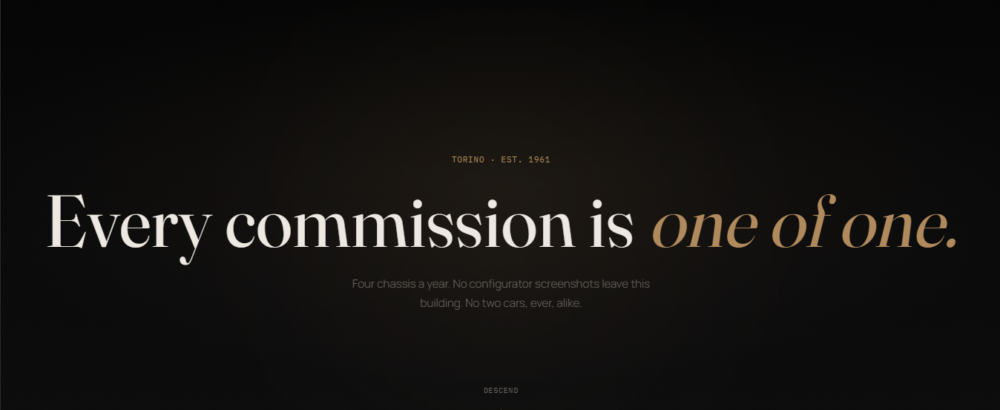
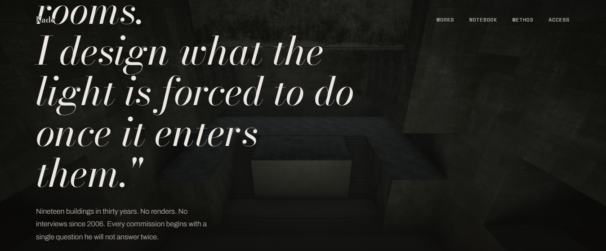
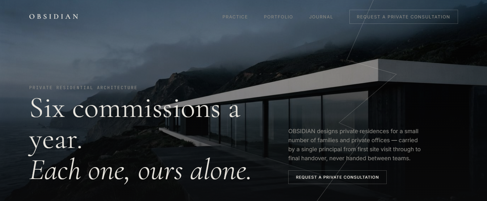

Who I am
Not a features list. The context that explains why the work looks the way it does.
I'm Gontse Makola, a software engineering student in Pretoria who spends more time in terminals and API specs than in design tools. My focus sits at the intersection of backend systems, web development, applied AI, and cybersecurity — the layers of a product that decide whether it survives contact with real users and real attackers.
I love building things — full stop. Give me a problem and I'll want to design the schema, wire the API, ship the interface, and then go back and figure out how to break it. Web development is where I learned to think in systems: every frontend I build is backed by a data model and an API contract I designed myself, not a black box I'm styling around.
I don't build demos that only work in a screen recording. I build things with authentication, rate limiting, database schemas, and detection logic — because that's the part of engineering that's actually hard, and actually matters.
Every project below runs on infrastructure I designed myself: containerized services, relational schemas, role-based access, and APIs built to be read by another engineer, not just demoed to a recruiter. That's what pulls me toward software and systems in general — not one framework or one language, but the discipline of making complex things work reliably.
How I think
Four principles that show up in every system I build, regardless of the stack.
Security is architecture, not a feature.
JWT, RBAC, and input validation aren't added at the end — they're decided before the first endpoint is written, because retrofitting security into a live schema is how breaches happen.
If it can't scale past one user, it's a prototype.
I design data models and API contracts assuming concurrent access from day one — connection pooling, indexing, and caching aren't optimizations, they're prerequisites.
AI is a component, not a gimmick.
In Sentinel and Apex, AI models sit behind a defined interface with fallbacks — the system still works if the model call fails. Novelty without reliability isn't engineering.
Readable code outlives clever code.
Every repo is structured so another engineer could onboard from the README alone — because the systems I build are meant to be maintained, not just demoed once.
What I've built
Six systems. Each with its own architecture, its own failure modes solved, its own reasoning.
Sentinel
An AI-powered Security Operations Center. Real-time threat analysis backed by a detection engine, sitting behind 20+ REST endpoints with full role-based access control — designed like infrastructure a SOC team would actually run.
Student Hub
A full student ecosystem built as independent modules sharing one core — marketplace, messaging, forums, accommodation listings, and a productivity dashboard, unified behind a single account system.
Apex
An AI-powered streaming discovery platform. Natural-language search backed by a Claude integration, layered over live TMDB data, wrapped in a deliberately cinematic interface — proof that AI features can feel considered, not bolted on.
Dark_AxE
A threat intelligence platform for aggregating and scoring indicators of compromise — built to turn raw signal into something a security team can actually act on.
THREAT_X
A Python command-line tool built on the VirusTotal API — designed for analysts who live in a terminal, not a browser. Fast lookups, clean output, no wasted clicks.
Store Management System
A clean, object-oriented inventory and sales system in Python and SQLite — the project that proves the fundamentals: class design, transactions, and data integrity, done properly.
Websites
Where engineering meets craft — three landing pages built to prove I can hold a room visually, not just architecturally.

Marque
A cinematic landing page inspired by luxury fashion houses — immersive motion, elegant layouts, and front-end engineering built to feel expensive.
Visit live site ↗
Kade
A luxury interior design landing page inspired by high-end architecture studios — cinematic motion, restrained typography, considered pacing.
Visit live site ↗
OBSIDIAN
A studio site for a practice that designs private residences for a small number of families and private offices — one principal, first visit through handover, never handed between teams.
Visit live site ↗How I solve problems
A real sequence I run on every build — not a decorative process graphic.
Model the threat first
Before writing a schema, I map who can access what, and what happens when they shouldn't be able to.
API-first, always
Contracts and endpoints get designed before UI — the interface should never dictate the data model.
Break it before they do
Auth edge cases, rate limits, and malformed input get tested deliberately, not left to chance.
Document like a handoff
Every repo ships with a README that assumes the next engineer wasn't in the room.
I don't think of software as something you finish — I think of it as something you defend. Every system I build is judged by what it does under load, under attack, and under someone else's hands six months from now.
Let's build something that
has to hold.
I'm looking for a team solving real infrastructure problems — backend, AI systems, or security — where correctness matters as much as speed. Based in Pretoria, open to remote and relocation.